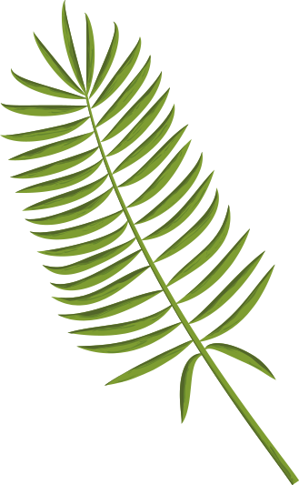
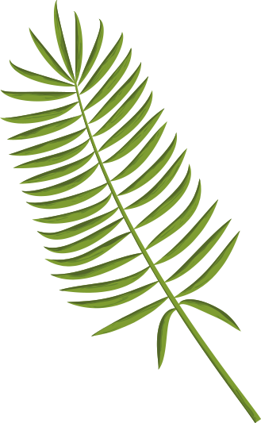

Pinatex Leather product made from a really rare idea. It is a business that allows
farmers to derive financial benefits from growing pineapples, while the produced material does not harm
the environment
16 Pineapple plants or 480 Pineapple leaves = 1 Square metre of Piñatex
New life for the byproduct
Ananas Anam is a for-profit company with a positive social impact and low environmental impact. The idea began in the 1990s by shocked leathergoods expert at the environmental impact of mass leather production and chemical tanning. Inspired by the abundance of natural resources, Dr Carmen Hijosa got an idea about a non-woven textile that could be commercially produced. The idea acquired positive social and economic impact without littering the planet.


The problem
Ananas Anam wants to meet the challenges of our times by developing innovative
products in which commercial success is integrated with, and promotes, social, ecological and cultural
development. Pinatex is an innovative textile created as a not harming alternative to animals leather
and synthetic materials that creates more and more pollution.
After pineapple harvest, the suitable plant leaves which are left behind are collected in bundles and
the long fibres are extracted. The fibres are washed, then go through a purification process to remove
any impurities which results in a fluff-like material. This fluff-like pineapple leaf fibre gets mixed
with a corn-based polylactic acid and undergoes a mechanical process to create Pinafelt, a non-woven
mesh that forms the base of all Pinatex collections. The rolls of Pinafelt are then shipped by boat from
the Philippines to Spain or Italy to make the Original. Pinatex is fit for use across fashion,
accessories & upholstery and has been used by over 1000 brands worldwide including Hugo Boss, H&M and
the Hilton Hotel Bankside.
Ananas Anam wants to meet the challenges of our times by developing innovative products in which commercial success is integrated with, and promotes, social, ecological and cultural development. Pinatex is an innovative textile created as a not harming alternative to animals leather and synthetic materials that creates more and more pollution.
After pineapple harvest, the suitable plant leaves which are left behind are collected in bundles and the long fibres are extracted. The fibres are washed, then go through a purification process to remove any impurities which results in a fluff-like material. This fluff-like pineapple leaf fibre gets mixed with a corn-based polylactic acid and undergoes a mechanical process to create Pinafelt, a non-woven mesh that forms the base of all Pinatex collections. The rolls of Pinafelt are then shipped by boat from the Philippines to Spain or Italy to make the Original. Pinatex is fit for use across fashion, accessories & upholstery and has been used by over 1000 brands worldwide including Hugo Boss, H&M and the Hilton Hotel Bankside.